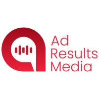
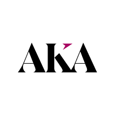
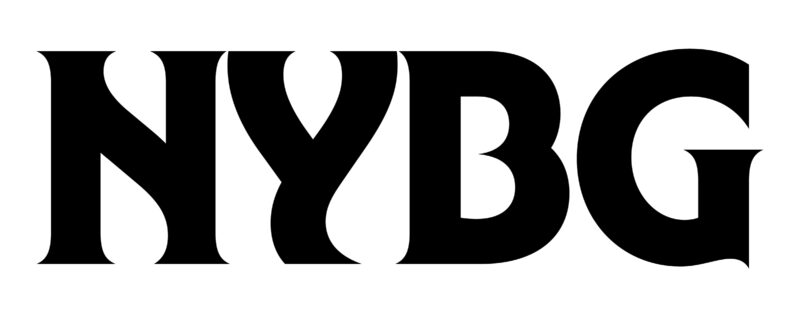
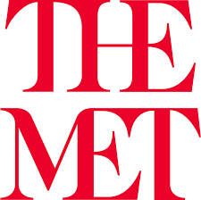

Marketing Operations Leader with 13+ Years of Experience
For more than 13 years, I've helped major media companies, brands and agencies grow by blending marketing operations, efficient workflows and data-driven storytelling. I know how to turn complex information into clarity that move goals forward and drive measurable revenue impact.
Brands I've Worked With

Ad Results Media

AKA NYC
The New York Times
Bloomberg

New York Botanical Garden

The Met Museum